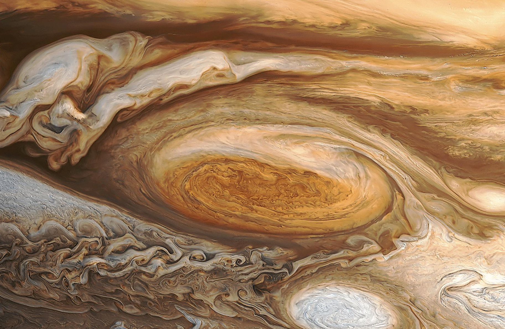
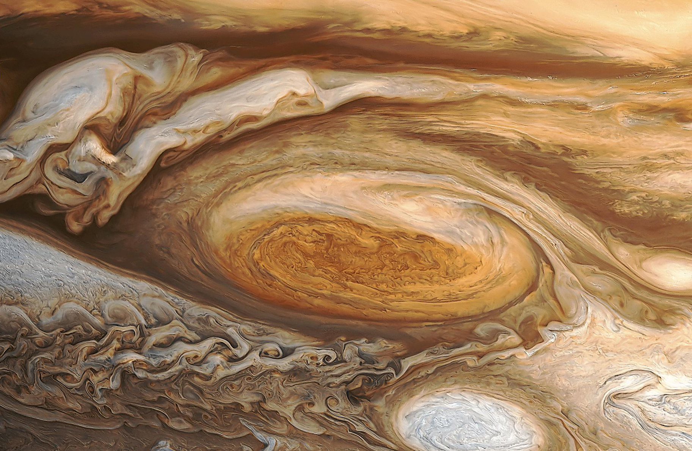

THE SOLAR SYSTEM


 


ABOUT SOLAR SYSTEM
The Solar System comprises the Sun and the objects that orbit it, whether they orbit it directly or by orbiting other objects that orbit it directly. Of those objects that orbit the Sun directly, the largest eight are the planets that form the planetary system around it, while the remainder are significantly smaller objects, such as dwarf planets and small Solar System bodies (SSSBs) such as comets and asteroids.
FORMATION AND COMPOSITION
The Solar System formed 4.6 billion years ago from the gravitational collapse of a giant molecular cloud. The vast majority of the system's mass is in the Sun, with most of the remaining mass contained in Jupiter. The four smaller inner planets, Mercury, Venus, Earth and Mars, also called the terrestrial planets, are primarily composed of rock and metal. The four outer planets, called the gas giants, are substantially more massive than the terrestrials. The two largest, Jupiter and Saturn, are composed mainly of hydrogen and helium; the two outermost planets, Uranus and Neptune, are composed largely of substances with relatively high melting points (compared with hydrogen and helium), called ices, such as water, ammonia and methane, and are often referred to separately as "ice giants". All planets have almost circular orbits that lie within a nearly flat disc called the ecliptic plane.
FACTS AND FIGURES
| name |
sun
 |
mercury
|
venus
|
earth
 |
mars
 |
jupiter
 |
saturn
 |
uranus
 |
neptune
 |
pluto
|
| length of year |
225 million years to make one revolution around the center of milky way |
88 earth days |
225 earth days |
365.25 earth days |
687 earth days |
4330 earth days |
10756 earth days |
30687 earth days |
165 earth years |
248 earth years |
| number of known satellites |
0 |
0 |
0 |
1 |
2 |
63 |
48 |
27 |
13 |
1 |
| length of day |
25 days 9hrs 7mins |
59 earth days |
243 earth days |
24hrs |
24hrs 38mins |
9hrs 55mins |
10hrs 40mins |
17hrs 40mins |
16hrs 7mins |
6 days 9hrs 18mins |
PLANET GALLERY
|
Mercury's closeness to the sun means that it is best observed during the hours of dawn and dusk, because during such twilight hours it is not overpowered by the
luminosity of the sun. To view mercury, it is best to wait until it is at maximum elongation-the greatest angular distance between an inferior planet and the sun
, as seen from earth. It revolves around the sun at a breakneck speed of 50Km/s, making it the fastest planet in the solar system.
|
 |
|
|
Venus's dense cloud cover is a great reflector of light, which makes it the brightest planet in the solar system. It is best seen in the hours of dusk and dawn. Although
venus and earth have similar diameters, surface areas, volume and mass, average surface temperature in venus is 400-500ocelsius. This is due to presence of
large amount of CO2 in its atmosphere.
|
|
The earth is unique in the solar system as the only planet with N2-O2 atmosphere with liquid water oceans that cover more that 70% of the surface
, and it is the only planet to harbour life. The earth remains geologically active; the surface is under constant change. It has a relatively large satellite, the moon
which is more that 1 quarter the size of earth. As a consequence they are often referred to as double planet.
|
|
|
Owing to its small size and mass, the martian atmosphere is exceptionally thin, approximately one hundredth the density of earth's atmosphere. The chief component of the
martian air is CO2, which comprises around 95% of the atmosphere. The average surface temperature is -60ocelsius. Water exists on mars, in both frozen
and vapour form, but it has not yet been found in liquid state because its surface is far too cold.
|
|
Jupiter is so massive that it contains more than twice the mass of all the other planets combined, and well over 1000 earths could fit inside it. Due to its rapid rotation
it appears to bulge at the equator. Over 80% of its atmosphere is composed of hydrogen and much of the remaining is helium. Oxygen, sulphur and nitrogen are also found
in the atmosphere.
|
|
|
Saturn is the farthest planet visible from the naked eye. Saturn shines strikingly, and is the most impressive sight to be viewed by an amateur telescopes, especially
when its rings are facing earth. It has the lowest density of any planet in the solar system. Saturn's atmosphere is similar to that of jupiter. It mainly comprises
of hydrogen, with about 5% helium and traces of ammonia and hydrocarbons.
|
|
Uranus was discovered by William Herschel. Its interior is shrouded by a greenish-blue blanket, coloured by the methane clouds which absorb red light, reflecting blue
and green. It also consists of a ring system but rings are much thinner, darker and fainter than that of saturn. Uranus' most noteworthy feature is the highly eccentric
tilt of axis which gives rise to some interesting seasons.
|
 |
|
Neptune's seasons is tilted at 29.5 degrees due to which it experiences seasons similar to earth. The average surface temperature is -220ocelsius. Neptune's
atmosphere comrprises mainly of hydrogen and helium gases. Also, it has significant amounts of methane and hydrocarbons.
|
|
Pluto was discovered by Clyde Tombaugh. Pluto has never been visited by a probe, so its exact characteristics are unknown. Scientists predicted that its surface is covered
by a layer of rock and ice. The ice is mostly nitrogen, with some methane and traces of CO2. Pluto is no longer considered a planet according to the new
definition of planet by the International Astronomical Union.
| |